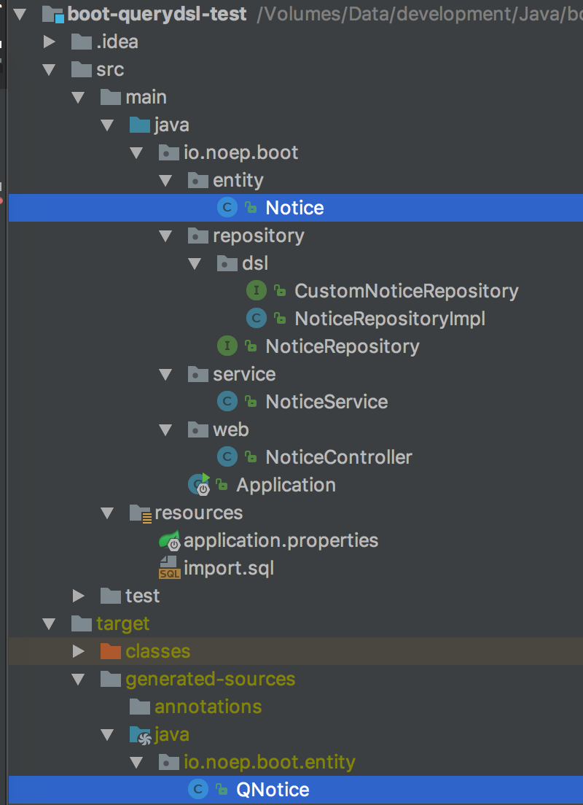
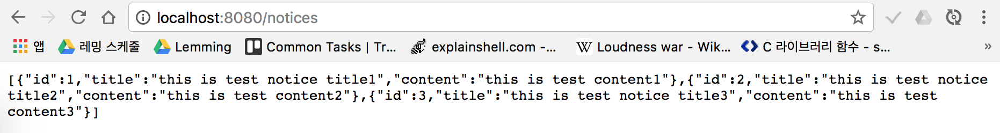
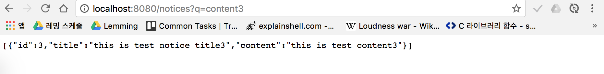

Spring Boot + JPA + Querydsl 적용하기
spring-data-jpa의 최대 장점 중 하나는 반복되는 쿼리문들을 직접 만들지 않아도 된다는 점이다.
하지만 이도 CRUD정도만 필요한 간단한 쿼리문이라면 모를까, 실제 프로젝트를 진행하면서 만나게 되는 복잡한 요구사항들을
spring-data-jpa만 이용해서 처리하기엔 한계가 있다. 쿼리를 java 소스 상에서 메소드 형태로 다루는 방법은 굉장히 여러가지
솔루션들이 있을 것으로 본다. 오늘은 그 중에서 하나인 QueryDsl을 이용해 간단한 API서버 및 동적 쿼리를 다뤄보고자 한다.
pom.xml에 필요한 의존성을 추가해준다
1 | <dependencies> |
querydsl의 내부 동작을 완벽하게는 모르지만, 사용하기 전에 한가지 전처리과정이 필요하다.
바로 @Entity 어노테이션을 읽어 필요한 Q class File들을 미리 만들어 두는 것이다.
이렇게 만들어진 Q class file(이하 Q 파일)들은 쿼리를 type safe하게 짤 수 있도록 도와준다.
(사실 com.querydsl.apt.jpa.JPAAnnotationProcessor 의 기본 전략이 JPA에서 사용하는 @Entity 어노테이션을 읽고 난 뒤 Q파일을 생성한다.
이 말고도 어노테이션 프로세서에 따라 다른 전략을 사용해 Q 파일들을 만든다)
(실제로 Q class file들을 Q파일이라고 부르는지는 나도 모른다 여기서는 편의상 Q파일이라 부르겠다)
이제 직접 간단한 엔티티 클래스를 만들고 Q파일이 어떤 형태로 생기게 되는지 확인해보도록 하자, 제목과 내용을 가지고 있는
간단한 게시판 엔티티를 만들어 보자
Notice.java
1 |
|
편의상 Getter와 Setter는 생략한다 (Lombok을 이용하거나 직접 만들거나 편한대로 하면 된다)
엔티티 클래스를 만든 뒤 mvn에서 컴파일을 실행하게 되면 target폴더 내 지정한 경로 안에 Q파일들이 생성된다. (예제의 경우 target/generated-sources/java 로 설정)

Noice 클래스에 대응되는 QNotice가 생성된 것을 확인할 수 있다. (Q파일들은 배포시 원본 엔티티와 같은 클래스패스에 저장된다) 생성된 Q파일을 보자.
QNotice.java
1 | ("com.querydsl.codegen.EntitySerializer") |
내부에 가지고 있는 필드들은 실제로 QueryDsl을 이용하여 쿼리를 작성할 때 이용된다.
이런 식으로 엔티티의 1:1 복사체를 만든 뒤 이를 바탕으로 JPQL을 생성하고, 이를 이용하여 쿼리를 실행하는 구조인것 같다.
이제 QueryDsl을 이용해 샘플 메소드를 만들어보겠다
먼저 인터페이스를 선언한다
CustomNoticeRepository.java
1 | public interface CustomNoticeRepository { |
해당 메소드는 String인자와 Pageable 인터페이스를 인자로 받아 Notice를 검색하는 메소드다.
입력받은 검색어 String이 있을 경우 공지사항의 제목과 내용을 검색하여 결과를 리턴한다.
이후 해당 인터페이스를 구현한다. 이때 QueryDslRepositorySupport 클래스를 상속받는다
NoticeRepositoryImpl
1 | public class NoticeRepositoryImpl extends QueryDslRepositorySupport implements CustomNoticeRepository { |
해당 저장소 구현체 클래스는 내부적으로 Q파일을 가지고 있다. 그리고 Q파일을 이용하여 마치 자바 메소드를 작성하듯 쿼리를 짤 수 있다.
1 | BooleanBuilder booleanBuilder = new BooleanBuilder(); |
QueryDsl 동적 쿼리 작성의 핵심은 BooleanBuilder인 것 같다. 메소드 인자인 query의 유무에 따라 쿼리를 선언해주기만 하면 된다.
1 | return getQuerydsl().applyPagination(pageable, from(notice)) |
이때 만들어진 booleanbuilder 표현식은 인자의 형태로 where 메소드 안에 전달된다.
전체적인 코드의 형태를 보면
1 | from(notice) |
로 형태가 쿼리문과 매우 유사하다 (타입체크는 덤)
이제 만들어진 인터페이스를 사용하기만 하면 된다
NoticeRepository.java
1 | public interface NoticeRepository extends JpaRepository<Notice, Long>, CustomNoticeRepository { |
실제 Spring Contianer가 읽는 NoticeRepository는 JpaRepository와CustomNoticeRepository 인터페이스를 상속받은 형태가 된다.
이제 JpaRepository 내부에 있는 메소드가 호출되는 경우 Jpa가, 우리가 만든 findAll 메소드가 호출되는 경우 NoticeRepositoryImpl에 만들어진 구현체 메소드를 호출한다.
사실 여기서 하나 헷갈리는 점이 있었는데. 커스텀 Repository의 경우 따로 구현체 네이밍에 신경을 쓰지 않았는데. boot 1.5.3을 이용하면서 부터 (사실 언제부터인지도 모르겠다) 커스텀 Repository의 경우에도 네이밍을 강제하게 되는 것 같다.
그래서 최초 만들때 CustomNoticeRepositoryImpl로 만들었다가 클래스명을 NoticeRepositoryImpl로 수정하게 되었다.
실제로 만든 메소드를 호출해보기 위해 컨트롤러를 만들고 콜을 해 보았다


생성되는 쿼리 로그
1 | Hibernate: select notice0_.id as id1_0_, notice0_.content as content2_0_, notice0_.title as title3_0_ from notice notice0_ limit ? |
where절 이 이후가 생성된 것을 확인할 수 있다.
샘플 소스는 여기 에서 확인해볼 수 있다.
서브쿼리나 통계 쿼리를 만들어 본 것은 아니지만, QueryDsl을 테스팅해보기에는 충분할 것 같다.
QueryDsl은 java 코드의 형태로 만들어진 쿼리를 짜는 것과 같아서 타임 체크가 수월하고 어이없는 잔실수 (띄어쓰기 한 칸, 세미콜론 등) 로부터 개발자를 보호해줄 수 있는 반면,
사용하기 위해선 엔티티에 해당하는 Q파일까지 같이 만들어야 하는 등의 번거로운 부분도 있다.
물론 선택은 개발자의 몫이 아닐까 싶다.